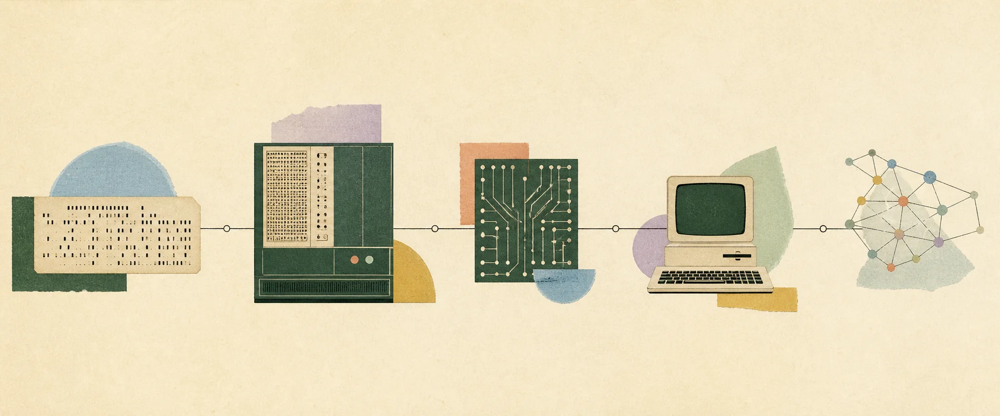

Try a broader concept, product, or problem.
Interactive concept map
Select a cluster or concept to inspect it. Concepts with a square center open into a detailed guide.
Scroll to explore →
Structured index
Applied depth